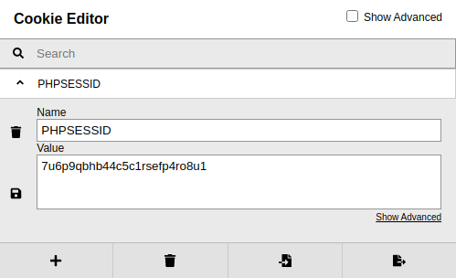

cookie editor
To grab the cookie, we can intercept any request in Burp Suite & get it from there, however, you can install a
great extension for your web browser called
cookie-editor :
For Google:
https://chrome.google.com/webstore/detail/cookie-editor/hlkenndednhfkekhgcdicdfddnkalmdmFor Firefox:
https://addons.mozilla.org/en-US/firefox/addon/cookie-editor/